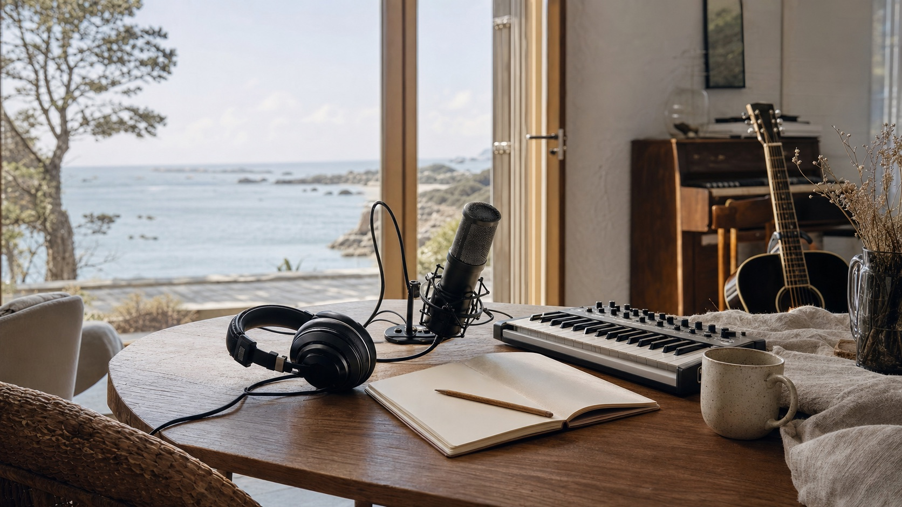
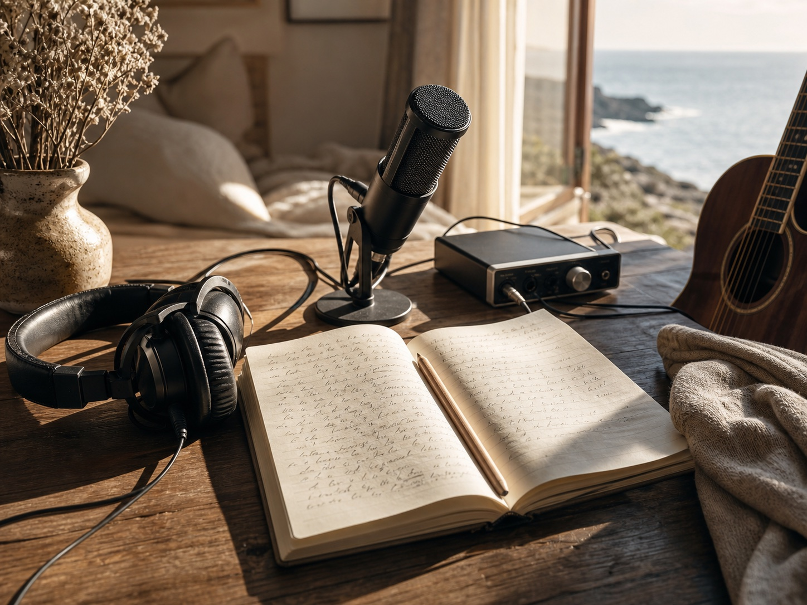
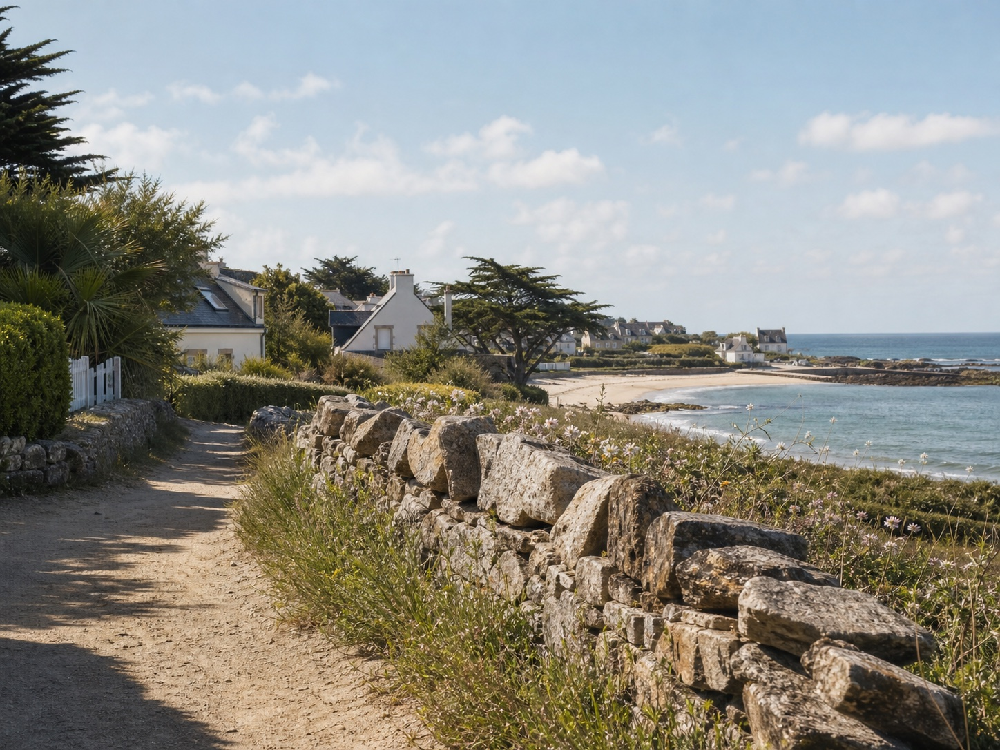

Format pilote : 72H pour une chanson
La chanson de votre vie
Creez en trois jours la chanson que vous n'avez jamais ose ecrire.
A Saint-Laurent-de-la-Mer, en Bretagne, une residence immersive en petit comite pour transformer votre histoire personnelle en chanson finalisee, avec votre voix, meme sans competence musicale initiale.
- Dates
- 17-19 juillet 2026
- Places
- 4 maximum · 3 minimum
- Tarif pilote
- 1 500 EUR TTC
Vous avez peut-etre une chanson en vous depuis longtemps.
Une histoire d'amour, un deuil, une renaissance, une aventure, une passion, une transmission, un souvenir ou une etape de vie que vous ne voulez pas laisser disparaitre.
Pendant 72 heures, vous etes accompagne pour transformer cette matiere personnelle en chanson finalisee. Ce n'est pas une ecole de musique, ni une formation technique, ni une demonstration d'IA. C'est une experience de creation accompagnee.
Transformer une histoire personnelle en chanson
Nous partons de votre recit, de vos mots, de vos images, de votre emotion et de votre voix. Puis nous construisons progressivement une intention artistique, des paroles, une interpretation vocale, une direction musicale, une production, une pochette et un teaser.

Pour les personnes qui ont quelque chose a raconter
Votre voix
Le chant du participant fait partie de l'experience. Il ne s'agit pas de prouver une performance vocale. La prise de voix est guidee simplement pour obtenir une interpretation exploitable et sincere.
Vos instruments
Si vous jouez d'un instrument, piano, guitare ou autre, il peut etre integre a la chanson si vous le souhaitez.
Vos choix
Votre chanson peut rester privee ou etre diffusee publiquement. L'entite d'accueil n'acquiert aucun droit automatique sur votre creation.
Saint-Laurent-de-la-Mer, a 200 metres de la plage
La residence se deroule dans une maison situee a Saint-Laurent-de-la-Mer, a Plerin, en Bretagne. Le lieu offre un acces plage a pied, un environnement calme, le sentier cotier a proximite et une ambiance de village maritime breton.
Chaque participant dispose d'une chambre individuelle, avec des espaces de vie partages pour les repas, les ecoutes et les temps de creation.
Quittez Paris le matin. Ecrivez votre chanson face a la mer l'apres-midi.

Anime par Xavier JAFFRAY
Xavier JAFFRAY est musicien, chanteur, organiste et porteur du projet musical Mike Alone Quartet. Son parcours s'inscrit dans les scenes garage, rhythm & blues et soul sixties, a travers The Looneys, The Immediates, The Royal Premiers, Les Responsables, puis Mike Alone Quartet.
Dans la residence, il accompagne le passage de l'histoire personnelle a une forme chanson : intention, ecriture, structure, direction artistique, prise de voix guidee, production et finalisation.
Decouvrir Mike Alone QuartetSon role pendant les 72 heures
- Clarifier votre intention et votre recit
- Accompagner l'ecriture et la structure
- Poser une direction artistique
- Guider la prise de voix sans coaching vocal technique
- Produire et finaliser la chanson
Trois jours pour faire naitre votre chanson
Faire emerger l'histoire
Accueil, clarification de votre histoire, intention, premieres paroles et references.
Composer et produire
Ecriture, structure, direction artistique, production musicale et prise de voix guidee.
Finaliser et remettre
Finalisation audio, pochette, teaser video, ecoute finale et remise des fichiers.
Ce avec quoi vous repartez
- Vos demos finalisees
- Votre chanson complete finalisee et prete a diffuser
- Une version voix participant
- Une version instrument participant si souhaitee
- Les paroles
- La pochette
- Les prompts et notes de creation
- Le teaser video
- Une explication du parcours de diffusion
- Les fichiers remis dans un dossier clair
La mise en ligne accompagnee sur les plateformes de streaming est une option payante separee.
Votre chanson reste votre choix
La confidentialite, la diffusion et l'utilisation promotionnelle restent a votre libre arbitre. Toute utilisation d'un extrait, d'un temoignage, de votre image, de votre voix ou de votre chanson devra faire l'objet d'une autorisation explicite.
L'IA comme outil
Pour les titres destines a une diffusion publique ou commerciale, les generations Suno seront realisees avec un abonnement Suno Pro actif, dans le respect des conditions d'utilisation de l'outil.
Suno Pro permet le cadre d'usage commercial prevu par Suno, sans garantir a lui seul une protection copyright sur les elements generes par IA.
Session pilote - 17 au 19 juillet 2026
La session est volontairement intime. Avant toute reservation, une courte candidature permet de verifier que le format correspond a votre histoire, a vos attentes et au cadre collectif. Le lien d'acompte est envoye apres confirmation de la candidature.
- Lieu
- Saint-Laurent-de-la-Mer, Bretagne
- Capacite
- 4 participants maximum
- Minimum
- 3 participants
- Chambre
- individuelle
- Acompte
- 750 EUR TTC
- Solde
- 750 EUR TTC avant le 5 juillet
Contact direct : xjaffray@gmail.com. Le lien Stripe d'acompte est envoye apres confirmation de la candidature.
Questions frequentes
Dois-je savoir chanter ?
Non. L'objectif n'est pas de prouver une performance. La prise de voix est guidee simplement.
Puis-je venir avec un instrument ?
Oui. Piano, guitare ou autre instrument peuvent etre integres selon le style et les contraintes techniques.
Puis-je garder ma chanson privee ?
Oui. Vous choisissez ce qui peut etre partage ou non.
Les repas et transferts sont-ils inclus ?
Oui. Chambre individuelle, nuits, repas et transferts entre la gare de Saint-Brieuc et le logement sont inclus.
La diffusion sur plateformes est-elle incluse ?
L'explication du parcours est incluse. L'accompagnement operationnel a la mise en ligne est une option payante separee.